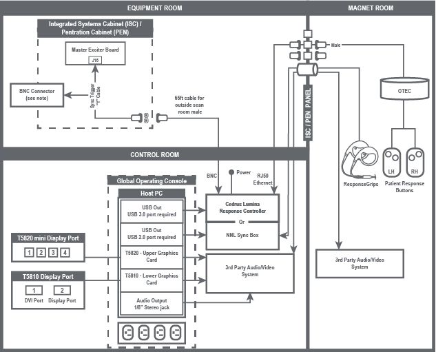
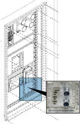
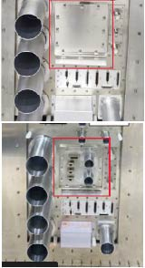
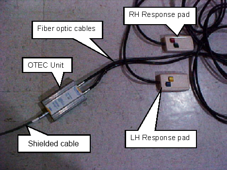
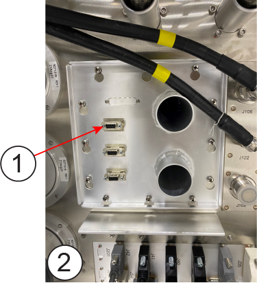
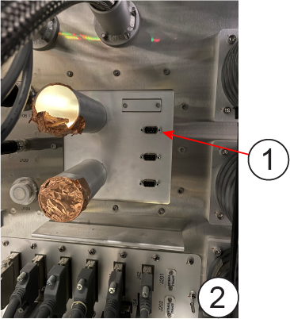
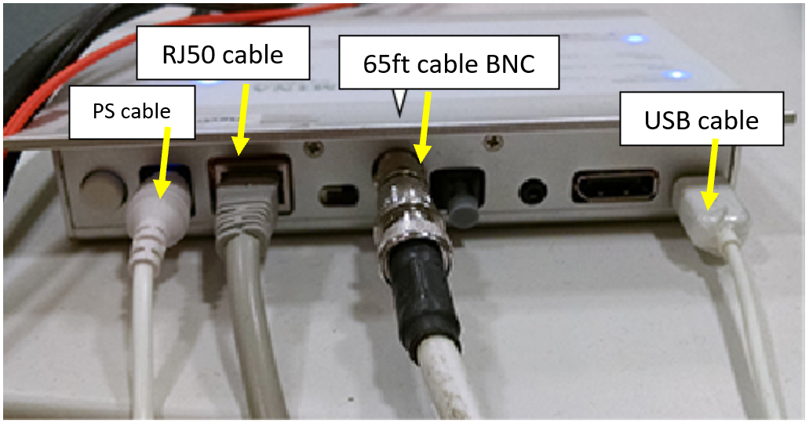

- 00000018WIA303556B0GYZ
- id_20445151.10
- Jul 28, 2025 5:39:34 PM
Installing the BrainWave
Prerequisites
The original waveguide sub-panel must be removed and replaced with the custom waveguide to allow cabling into the magnet room.
| DANGER | |
|---|---|
| DANGER | |
|---|---|
Note
- If necessary, BrainWave components can obtain power from the outlets inside the GOC. To get access to the outlets, you must remove the right side of the GOC cover.
- Tape up the BNC connector from the Y-cable and leave it unplugged.
- The cable between Cedrus Lumina Response Controller and the ISC / PEN panel may be short. If it is too short, use the provided cable (5778183) as needed.
- For miniDP connection on T5820 PC ports 1 and 2 may be used for IRD connectivity. It is recommended to use port 3.

Procedure
- Perform LOTO on the ISC/HEC and MDP cabinets. See Applying LOTO - Integrated System Cabinet (ISC) and Applying LOTO - Main Disconnect Panel (MDP).
- In the Magnet Room:
- Remove standard blank panel and panel screws to prepare install the custom waveguide panel (5835433) and connect cable.
Figure 2. Sub-panel – on the wall siting 
Figure 3. Sub-panel – off the wall siting 
- Attach the shielded cable to the OTEC unit inside the magnet room.

- Attach the shielded cable 9-pin end to waveguide panel connector on magnet room side.

Item Description 1 Shielded cable 9-pin 2 Magnet room side - Fasten all waveguide panel screws from magnet room side.
- Remove standard blank panel and panel screws to prepare install the custom waveguide panel (5835433) and connect cable.
- In the Equipment Room:
- Attach the RJ50 Ethernet cable 9-pin end to waveguide panel connector on equipment room side.

Item Description 1 RJ50 Ethernet cable 9-pin 2 Equipment room side - Route the RJ50 Ethernet cable from equipment room to operator room.
- Connect Y trigger cable(2293552) male port to Exciter J16, tape up the BNC connector from the Y-cable and leave it unplugged.

- Connect the Y trigger cable female port to "65ft cable for outside scan room" male port, route "65ft cable” BNC end to operator room to prepare connect to Cedrus Lumia control unit BNC port.
- Attach the RJ50 Ethernet cable 9-pin end to waveguide panel connector on equipment room side.
- In the Control Room:
- Put the Cedrus Lumina Controller in operator room near GOC.
- Insert the RJ50 Ethernet port into the back of the Cedrus Lumia control unit.
- Connect USB cable to GOC USB port.
- Connect the Cedrus Lumia control unit power from the outlets inside the GOC if necessary. To get access to the outlets, need to remove the right side of the GOC cover.

- If you are installing video hardware on a Dell T5820 PC, install the Dongle mini DP male to DP female (5795077) to DisplayPort to VGA Video Adapter Converter (5748906) and then use the VGA adapter Converter to connect to the display (either monitor or goggles).Note If the display connectors are still not compatible, request the third-party display solution provider to supply adapters as necessary.